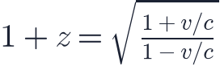

In this lesson you will learn
|
Light is a wave
Almost everything we know about the distant universe arrives as light. Light is
an electromagnetic wave, and the distance between two crests is its
wavelength, written  (the Greek letter lambda).
(the Greek letter lambda).
Our eyes see wavelengths from about 380 nanometres (violet) to 750 nanometres (red). But the full electromagnetic spectrum is much wider:
| Band | Wavelength | Seen in the universe |
|---|---|---|
| Gamma rays | below 0.01 nm | Exploding stars, black hole jets |
| X-rays | 0.01 – 10 nm | Hot gas in galaxy clusters |
| Ultraviolet | 10 – 380 nm | Young, hot stars |
| Visible | 380 – 750 nm | Stars and galaxies |
| Infrared | 750 nm – 1 mm | Dust, cool stars, very distant galaxies |
| Microwaves | 1 mm – 1 m | The cosmic microwave background |
| Radio | above 1 m | Cold hydrogen gas, radio galaxies |
All of these travel at the same speed in empty space: the speed of light, km/s.
Spectra: splitting light into colours
A prism or a diffraction grating spreads light out by wavelength, producing a spectrum. A hot, dense object such as a star produces a continuous rainbow. On top of it appear narrow dark lines.
These are spectral lines. Each chemical element absorbs and emits light only at particular wavelengths, determined by the energy levels of its electrons. Hydrogen, for example, has a famous red line called Hα at 656.3 nm.
Fingerprints of the elements The pattern of lines is a unique fingerprint. By comparing a star's lines with those measured in a laboratory, astronomers can tell which elements it contains without ever going there. |
The Doppler effect
You have heard the Doppler effect: an ambulance siren sounds higher-pitched as it approaches and lower as it moves away. The source squeezes the waves in front of it and stretches those behind.
The same happens with light:
- A source moving away stretches its light to longer wavelengths: a redshift.
- A source moving towards us compresses its light to shorter wavelengths: a blueshift.
"Red" simply means "longer wavelength"; the shift can happen in any band, including radio or X-rays.
Measuring redshift
We compare the observed wavelength of a line with its laboratory (rest) wavelength and define the redshift
Positive  means redshift, negative
means redshift, negative  means blueshift. Every line in a
spectrum shifts by the same factor
means blueshift. Every line in a
spectrum shifts by the same factor  , which is how we know we have
identified the lines correctly.
, which is how we know we have
identified the lines correctly.
For speeds much smaller than light, the redshift gives the velocity along the line of sight directly:
Worked example In a galaxy's spectrum the Hα line appears at 669.4 nm instead of 656.3 nm. Then , and the galaxy recedes at km/s. |
For speeds close to the speed of light, special relativity gives the exact Doppler formula:

This formula never lets  exceed
exceed  , even for very large
, even for very large  .
.
Not all redshifts are Doppler shifts For distant galaxies, most of the redshift is not caused by motion through
space. It comes from the stretching of space itself while the light travels.
You will learn about this cosmological redshift in lesson
L2.2. The formula
still defines |
Try it: Spectrum & Redshift Simulator Move a light source and watch the absorption lines slide. Then try the Mystery galaxy challenge. |
Remember this
|